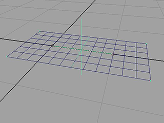
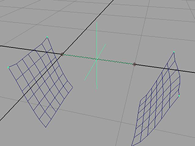
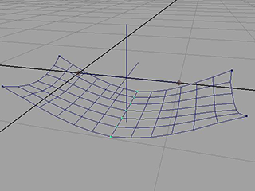
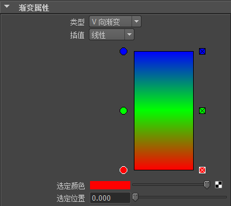
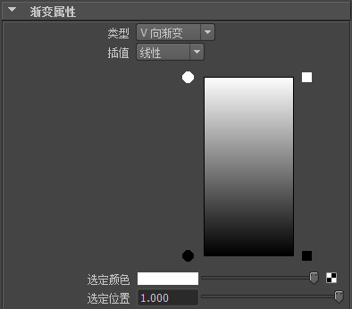
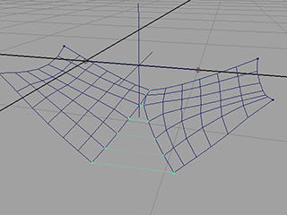
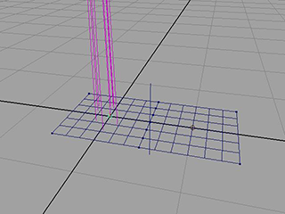
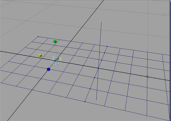
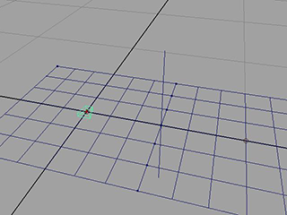
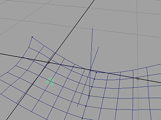

此示例将介绍如何为 nCloth 创建拉链。
设置拉链
若要创建拉链，首先需要为要连接的拉链创建一对 nCloth 对象。
为布料创建输入网格
- 选择“创建 > 多边形基本体 > 平面”(Create > Polygon Primitives > Plane) >
 。
。
将打开“多边形平面选项”(Polygon Plane Options)窗口。
- 选择编辑 > 重置设置(Edit > Reset Settings)。
- 按如下所示设置“平面”(Plane)选项：
- 宽度分段数(Width divisions)：6
- 高度分段数(Height divisions)：6
- 单击“创建”(Create)。
Maya 将以原点为中心创建平面。
- 选择“创建 > 多边形基本体 > 平面”(Create > Polygon Primitives > Plane)。
将在同一位置创建与第一个平面相同的第二个平面。
并排放置平面
- 选择第二个平面。
- 打开“通道盒”(Channel Box)。
- 将“TranslateX”设置为 1。
第二个平面会移动到右侧，以使两个平面的边接触。
生成平面 nCloth
- 单击第一个平面，并在按住 Shift 键的同时单击另一个平面以同时选择二者。
- 选择。
Maya 将生成平面 nCloth。
- 播放模拟。
这两个平面会降落。
要防止布料一致降落，需要约束其角点。
约束布料的角点
- 按住 Shift 键的同时选择这两个 nCloth 平面。
- 在 nCloth 上单击鼠标右键，然后从标记菜单中选择“顶点”(Vertex)以切换到顶点模式。
将显示这些平面的顶点。
- 选择每个平面的外角上的顶点，总共有四个选定顶点。

- 选择。
- 播放 nCloth 模拟。
nCloth 对现在由其角点固定。两个布料落在它们的接合点处。

使两个 nCloth 在其中心接合
- 选择两个 nCloth。
- 切换到“顶点”(Vertex)模式。
将显示 nCloth 顶点。
- 沿两个 nCloth 的相交处选择它们的所有顶点。
注：
因为两个 nCloth 的边彼此重叠，所以您可能很难选择两个平面上的所有顶点。为使该过程变得简单一些，可以稍微移动两个平面，使其彼此分离，然后选择顶点。如果执行该操作，请确保将平面返回到其原始位置，然后再继续该示例。
- 选择。
- 播放 nCloth 模拟。
两个 nCloth 对象现在在其中心处接合。
 - 打开“属性编辑器”(Attribute Editor)并选择 DynamicConstraintShape 选项卡。
- 将“约束方法”(Constraint Method)设置为“焊接”(Weld)。
“焊接”(Weld)设置可确保两个 nCloth 对象之间没有空间。
控制拉链的状态
若要控制拉链的状态，需要将渐变纹理添加到“强度贴图属性”(Strength Map Attribute)。这允许您控制两个 nCloth 对象之间的组件到组件接合的强度。
添加渐变纹理
- 选择第一个 nCloth。
- 选择。
Maya 会显示“Hypergraph: 连接”(Hypergraph: Connections)窗口。
- 选择 nComponent3 节点。
- 打开“属性编辑器”(Attribute Editor)并单击“强度贴图”(Strength Map)字段旁边的小方格框。
此时将显示“创建渲染节点”(Create Render Node)窗口。
- 在“创建渲染节点”(Create Render Node)窗口的右侧面板中，单击
 。
。
- 在“属性编辑器”(Attribute Editor)的“渐变属性”(Ramp Attributes)区域中，单击在颜色渐变中心有一个 x 的框以删除绿色标记。

- 选择位于颜色渐变左下角的红色小圆。“选定颜色”(Selected Color)旁边的彩色框会改变。
- 单击“选定颜色”(Selected Color)旁边的彩色框。
将显示“颜色选择器”(Color Chooser)。
- 选择黑色并使鼠标离开“颜色选择器”(Color Chooser)将其关闭。
颜色渐变的底部更改为黑色。
- 在“属性编辑器”(Attribute Editor)的“渐变属性”(Ramp Attributes)部分，选择位于颜色渐变左上方的蓝色小圆形。“选定颜色”(Selected Color)旁边的彩色框会改变。
- 单击“选定颜色”(Selected Color)旁边的彩色框。
随即出现“颜色选择器”(Color Chooser)。
- 选择白色并使鼠标离开“颜色选择器”(Color Chooser)将其关闭。
颜色渐变的顶部更改为白色。
 - 播放模拟。
在播放期间调整“选定颜色”(Selected Color)滑动条时，两个平面会压缩和解压缩。

虽然调整“选定颜色”(Selected Color)会产生所需的结果，但它不是用于控制 nCloth 拉链的唯一可能的方法。可以使用“纹理放置”(Texture Placement)获得具有更大程度的控制的相同效果。
编辑“纹理放置”(Texture Placement)
- 在“属性编辑器”(Attribute Editor)的“渐变属性”(Ramp Attributes)部分，选择位于颜色渐变左下方的小圆形。
- 将“选定位置”(Selected Position)设置为 0.45。
- 选择位于颜色渐变左上方的小圆形。
- 将“选定位置”(Selected Position)设置为 0.5。
- 选择 place2dTexture1 选项卡。
- 将“UV 向重复”(Repeat UV)设置为 1.0，0.25。
- 播放模拟。
可以使用“偏移”(Offset)属性的第二个值来调整拉链在播放期间的状态。值为 0.55 会生成完全压缩的状态，而值 0.175 会生成完全解压缩的状态。
现在可以通过为“偏移”(Offset)值设定关键帧来对拉链设置动画。
创建拉链对象
若要控制拉链，您需要创建拉链模型和毛囊。
创建控制毛囊
- 选择第一个平面。
- 在 FX 菜单集中，选择
。
将显示“创建头发选项”(Create Hair Options)窗口。
- 选择“编辑 > 重置设置”(Edit > Reset Settings)。
- 按如下所示设置头发选项：
- “U 数”(U Count)：1
- “V 数”(V Count)：1
- 单击“创建头发”(Create Hairs)。

将显示一个带有很多头发的毛囊。对于本示例，将仅使用毛囊，而不是实际头发。
- 打开大纲视图。
- 选择 hairSystem1 和 pfxHair1 并按 Delete 键。
- 选择 hairSystem1Follicles，然后选择 pPlane1Follicle。
- 选择 curve1 并按 Delete 键。
现在，您拥有一个可用于控制拉链的毛囊。现在，您需要一个模型来表示拉链。
创建拉链模型
- 选择“创建 > 多边形基本体 > 立方体”(Create > Polygon Primitives > Cube) > 。
将显示“多边形立方体选项”(Polygon Cube Options)窗口。
- 选择“编辑 > 重置设置”(Edit > Reset Settings)。
- 单击“创建”(Create)。
- 打开“属性编辑器”(Attribute Editor)。
- 选择 pCube1 选项卡，并将“比例”属性设置为 0.092、0.026、0.094。
- 将场景视图设置为“顶点”(Vertex)模式。
- 选择立方体远侧上的四个顶点，然后选择缩放工具。

- 将 ScaleX 控制柄慢慢拖动到左侧，直到立方体形成一个粗略的楔形形状。通过拖动 ScaleX 控制柄，可以确保立方体的末端仅在 X 方向进行调整。

- 打开大纲视图。
- 在“大纲视图”(Outliner)中选择拉链并将其中部拖动到 pPlane1Follicle5050 上。
- 拉链对象现在附加到您之前创建的毛囊。
- 播放模拟
拉链现在粘滞到布料上。

为拉链创建表达式
为了使拉链正常工作，需要将其与用于控制两个 nCloth 对象的状态的 V 向偏移属性关联。为此，您需要指定一个将驱动拉链的交互的表达式。
定位拉链
- 选择 pPlane1FollicleShape5050。
- 在“属性编辑器”(Attribute Editor)中将“参数 U”(Parameter U)设置为 1.0。
拉链现在应与布料的中心对齐。将“参数 V”(Parameter V)属性从 0 调整到 1.0，现在应该也会向上和向下移动拉链（移动长度为边的长度）。
创建表达式
- 选择。
将显示“表达式编辑器”(Expression Editor)窗口。
- 将以下内容输入到“表达式”(Expression)字段中。
place2dTexture1.offsetV = (1-pPlane1FollicleShape5050.parameterV) * 0.25 + 0.25
- 单击“创建”，然后单击“关闭”。
您的拉链现已完成。若要打开和关闭拉链，您现在可以调整 pPlane1Follicle5050 的“参数 V”(Parameter V)属性。